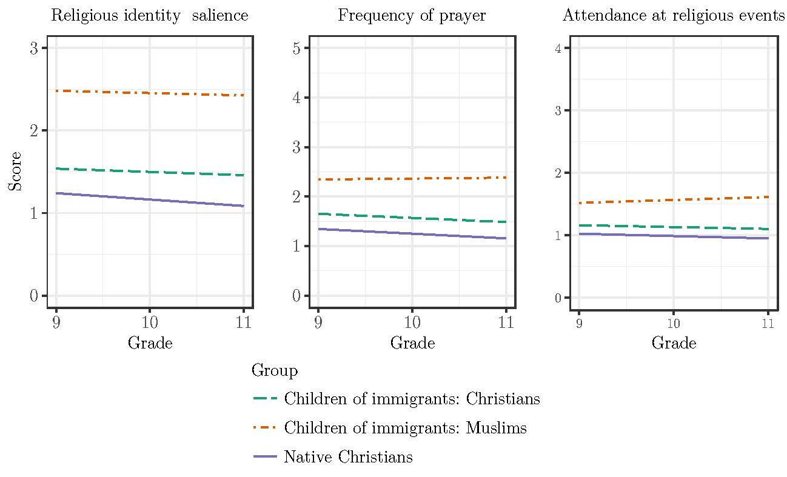

My dissertation investigates the salience of religion for children of immigrants from all faith traditions during their process of incorporation into European societies. I propose that religion is a source of politicized collective identities. Moreover, I argue that the Muslim identity is distinctive in that it functions as a racialized pan-ethnic identity: an imposed categorization that unifies individuals from different backgrounds to encourage political mobilization.
I first apply longitudinal methods to analyze the co-evolution of religiosity and national identities among adolescents as they progress through secondary school in four Western European countries. I find that Christian children of immigrants and natives become more secular over time; however, religious identities and religious practices continue to be more important for children of immigrants as compared to natives. Moreover, Muslim children of immigrants increase their participation in religious services all the while developing a stronger attachment to their European national identities.
Turning from adolescents to adults, I then use multilevel data from twenty European countries to examine how religiosity among children of immigrants is shaped by regional and national contexts. Except for Muslims, the religiosity of children of immigrants is lower in regions with lower native religiosity. However, both Muslim and Orthodox children of immigrants are more religious in countries with stronger multiculturalism and anti-discrimination policies. Finally, I examine the relationship between religion and political engagement among adult children of immigrants across Europe. I find that children of immigrants’ involvement with religious communities and sense of group consciousness are both associated with more political acts. The relationship between religious attendance and political participation is stronger among Muslims and among children of immigrants living countries with broader multiculturalism policies.
Taken together, these findings suggest the resurgence of religion as a meaningful and resourceful identity for children of immigrants, the continuing importance of multiculturalism policies, and the emergence of new political communities.
Santa Fe Institute
1399 Hyde Park Road
Santa Fe, NM 87501
Email: tamara@santafe.edu
Copyright © 2018 Tamara van der Does. All rights reserved.